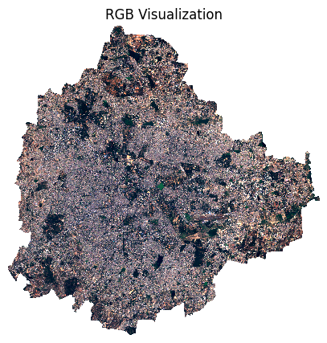
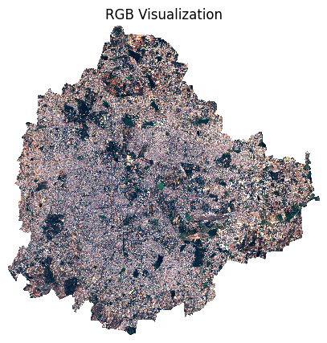
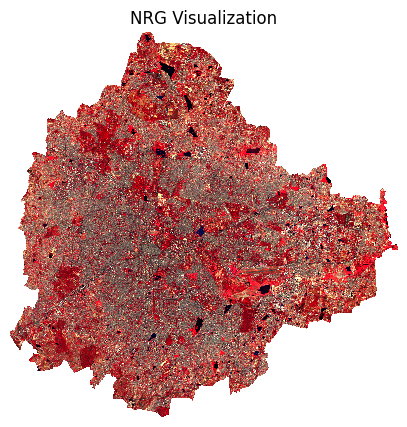
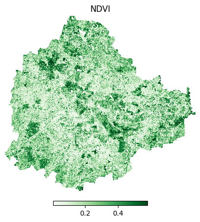
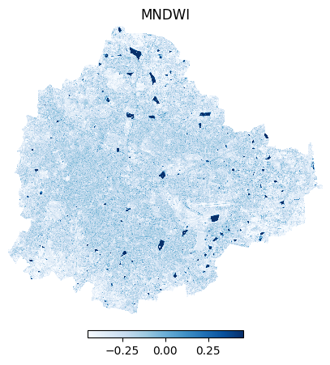
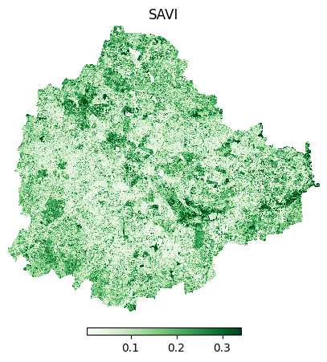
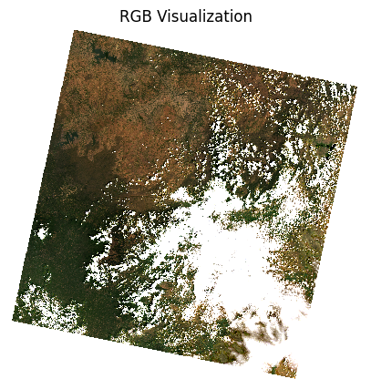
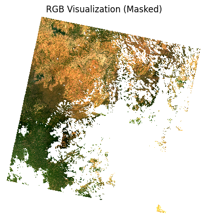

Processing Satellite Images with XArray#
The tutorial shows how to take satellite data from widely used sensors and process it using XArray. This tutorial uses data downloaded from the providers and the methods shown is suitable for uses in offline environments or when cloud-hosted datasets cannot be used.
For cloud-based processing of satellite images, see our full course Scalable Remote Sensing Workflows with Xarray
For processing of ResourceSat-2/2A data, see our detailed post LISS4 Image Processing using XArray and Dask .
The tutorial is divided into 2 parts showing how to work with Sentinel-2 and Landsat-8 scenes.
Part-1: Processing Sentinel-2 L1C Data#
In this section, we will take a single Sentinel-2 L1C scene and learn how to read it using XArray, visualize it and compute spectral indices.
Input Layers:
S2A_MSIL1C_20230212T050931_N0509_R019_T43PGQ_20230212T065641.SAFE.zip: A Sentinel-2 L1C scene downloaded from the Copernicus Browser.bangalore.geojson: A GeoJSON file representing the municipal boundary for the city of Bengaluru, India.
Output:
clipped.tif,ndvi.tif,mndwi.tif,savi.tif: RGB composite and spectral indices calculated from Sentinel-2.
Data Credit:
Bangalore Ward Maps Provided by Spatial Data of Municipalities (Maps) Project by Data{Meet}.
Sentinel-2 Level 2A Scenes: Contains modified Copernicus Sentinel data (2025-02)
Setup and Data Download#
The following blocks of code will install the required packages and download the datasets to your Colab environment.
Running the Notebook:
The preferred way to run this notebook is on Google Colab.

%%capture
if 'google.colab' in str(get_ipython()):
!pip install rioxarray
import os
import matplotlib.pyplot as plt
import xarray as xr
import rioxarray as rxr
import zipfile
import geopandas as gpd
from dask.distributed import Client
client = Client() # set up local cluster on the machine
client
If you are running this notebook in Colab, you will need to create and use a proxy URL to see the dashboard running on the local server.
if 'google.colab' in str(get_ipython()):
from google.colab import output
port_to_expose = 8787 # This is the default port for Dask dashboard
print(output.eval_js(f'google.colab.kernel.proxyPort({port_to_expose})'))
data_folder = 'data'
output_folder = 'output'
if not os.path.exists(data_folder):
os.mkdir(data_folder)
if not os.path.exists(output_folder):
os.mkdir(output_folder)
def download(url):
filename = os.path.join(data_folder, os.path.basename(url))
if not os.path.exists(filename):
from urllib.request import urlretrieve
local, _ = urlretrieve(url, filename)
print('Downloaded ' + local)
s2_scene = 'S2A_MSIL1C_20230212T050931_N0509_R019_T43PGQ_20230212T065641.SAFE.zip'
data_url = 'https://github.com/spatialthoughts/geopython-tutorials/releases/download/data/'
download(data_url + s2_scene)
aoi = 'bangalore.geojson'
download(data_url + aoi)
Data Pre-Processing#
We first unzip the zip archive and create a XArray Dataset from the individual band images.
s2_filepath = os.path.join(data_folder, s2_scene)
with zipfile.ZipFile(s2_filepath) as zf:
zf.extractall(data_folder)
Sentinel-2 images come as individual JPEG2000 rasters for each band. The image files are located in the GRANULE/{SCENE_ID}/IMG_DATA/ subfolder. We find the files and read them using rioxarray.
import glob
s2_folder = s2_filepath[:-4]
band_files = {}
for filepath in glob.glob(
os.path.join(s2_folder, 'GRANULE', '*', 'IMG_DATA', '*B*.jp2')):
filename = os.path.basename(filepath)
# Extract the part of the filename containing band name such as 'B01'
band_name = os.path.splitext(filename)[0].split('_')[-1]
band_files[band_name] = filepath
band_files
Different Sentinel-2 bands have different spatial resolutions. To put them in the same array, their dimensions must match. So we combine bands of similar resolutions and resample others to match them.
B04, B03, B02 and B08 = 10m
B12, B11, B07, B06, B05 and B08A = 20m
B10, B09, B1 = 60m
b4 = rxr.open_rasterio(band_files['B04'], chunks=True)
b3 = rxr.open_rasterio(band_files['B03'], chunks=True)
b2 = rxr.open_rasterio(band_files['B02'], chunks=True)
b8 = rxr.open_rasterio(band_files['B08'], chunks=True)
stack1 = xr.concat([b4, b3, b2, b8], dim='band').assign_coords(
band=['B04', 'B03', 'B02', 'B08'])
b5 = rxr.open_rasterio(band_files['B05'], chunks=True)
b6 = rxr.open_rasterio(band_files['B07'], chunks=True)
b7= rxr.open_rasterio(band_files['B07'], chunks=True)
b8a = rxr.open_rasterio(band_files['B8A'], chunks=True)
b11 = rxr.open_rasterio(band_files['B11'], chunks=True)
b12 = rxr.open_rasterio(band_files['B12'], chunks=True)
stack2 = xr.concat([b5, b6, b7, b8a, b11, b12], dim='band').assign_coords(
band=['B05', 'B06', 'B07', 'B8A', 'B11', 'B12'])
Now we reproject the bands to match the resolution of the 10m bands using reproject_match()
stack2 = stack2.rio.reproject_match(stack1)
Both band stacks now have the same resolution and hence the same X and Y dimensions. We can now combine them across the band dimension. The Sentinel-2 scenes come with NoData value of 0. So we set the correct NoData value before further processing.
scene = xr.concat([stack1, stack2], dim='band')
scene = scene.where(scene != 0)
scene
We will clip the scene to the geometry of the GeoJSON file. We must ensure that the projection of the GeoDataFrame and the XArray DataArray match.
aoi_path = os.path.join(data_folder, aoi)
aoi_gdf = gpd.read_file(aoi_path)
geometry = aoi_gdf.to_crs(scene.rio.crs).geometry
clipped = scene.rio.clip(geometry)
clipped
Sentinel-2 pixel values need to be converted to reflectances using the following formula:
ρ = (L1C_DN + RADIO_ADD_OFFSET) / QUANTIFICATION_VALUE
QUANTIFICATION_VALUE for all S2 scenes is 10000 and starting from January 22,2023, all new scenes have a RADIO_ADD_OFFSET of -1000
scaled = (clipped - 1000)/10000
We can now apply all the operations and compute the result via Dask. This will load the resulting array into memory.
%%time
scaled = scaled.compute()
Visualization#
We can visualize a 3-band composite image.
fig, ax = plt.subplots(1, 1)
fig.set_size_inches(5,5)
scaled.sel(band=['B04', 'B03', 'B02']).plot.imshow(
ax=ax,
robust=True)
ax.set_title('RGB Visualization')
ax.set_axis_off()
plt.show()

We can also apply a custom stretch for a better visualization.
percentile_stretch = (1, 70)
stretch_vmin, stretch_vmax = np.nanpercentile(scaled.values, percentile_stretch)
stretch_vmin, stretch_vmax
fig, ax = plt.subplots(1, 1)
fig.set_size_inches(5,5)
scaled.sel(band=['B04', 'B03', 'B02']).plot.imshow(
ax=ax,
vmin=stretch_vmin,
vmax=stretch_vmax)
ax.set_title('RGB Visualization')
ax.set_axis_off()
plt.show()

Here we visualize a false color composite
fig, ax = plt.subplots(1, 1)
fig.set_size_inches(5,5)
scaled.sel(band=['B08', 'B04', 'B03']).plot.imshow(
ax=ax,
robust=True)
ax.set_title('NRG Visualization')
ax.set_axis_off()
plt.show()

Calculating Indices#
red = scaled.sel(band='B04')
nir = scaled.sel(band='B08')
ndvi = (nir - red)/(nir + red)
Let’s visualize the results.
cbar_kwargs = {
'orientation':'horizontal',
'fraction': 0.025,
'pad': 0.05,
'extend':'neither'
}
fig, ax = plt.subplots(1, 1)
fig.set_size_inches(5,5)
ndvi.plot.imshow(
ax=ax,
cmap='Greens',
robust=True,
cbar_kwargs=cbar_kwargs)
ax.set_title('NDVI')
ax.set_axis_off()
plt.show()

green = scaled.sel(band='B03')
swir1 = scaled.sel(band='B11')
mndwi = (green - swir1)/(green + swir1)
fig, ax = plt.subplots(1, 1)
fig.set_size_inches(5,5)
mndwi.plot.imshow(
ax=ax,
cmap='Blues',
robust=True,
cbar_kwargs=cbar_kwargs)
ax.set_title('MNDWI')
ax.set_axis_off()
plt.show()

red = scaled.sel(band='B04')
nir = scaled.sel(band='B08')
savi = 1.5 * ((nir - red) / (nir + red + 0.5))
fig, ax = plt.subplots(1, 1)
fig.set_size_inches(5,5)
savi.plot.imshow(
ax=ax,
cmap='Greens',
robust=True,
cbar_kwargs=cbar_kwargs)
ax.set_title('SAVI')
ax.set_axis_off()
plt.show()

Saving the results#
files = {
'clipped.tif': scaled,
'ndvi.tif': ndvi,
'mndwi.tif': mndwi,
'savi.tif': savi
}
for file in files:
output_path = os.path.join(output_folder, file)
files[file].rio.to_raster(output_path, driver='COG')
Part-2: Processing Landsat-8 Data#
In this section, we will take a single Landsat 8 scene and learn how to read it using XArray, visualize it and mask clouds.
Input Layers:
LC08_L2SP_144052_20190209_20200829_02_T1.zip: A Landsat 8 scene downloaded from the USGS EarthExplorer.
Output Layers:
landsat_masked.tif: Cloud-masked RGB composite of Landsat-8.
Data Credit:
Landsat-8 image courtesy of the U.S. Geological Survey
Setup and Data Download#
import os
import matplotlib.pyplot as plt
from matplotlib.colors import ListedColormap
import xarray as xr
import rioxarray as rxr
import zipfile
import numpy as np
data_folder = 'data'
output_folder = 'output'
if not os.path.exists(data_folder):
os.mkdir(data_folder)
if not os.path.exists(output_folder):
os.mkdir(output_folder)
def download(url):
filename = os.path.join(data_folder, os.path.basename(url))
if not os.path.exists(filename):
from urllib.request import urlretrieve
local, _ = urlretrieve(url, filename)
print('Downloaded ' + local)
landsat_scene = 'LC08_L2SP_144052_20190209_20200829_02_T1.zip'
data_url = 'https://github.com/spatialthoughts/geopython-tutorials/releases/download/data/'
download(data_url + landsat_scene)
Data Pre-Processing#
We first unzip the zip archive and create a XArray Dataset from the individual band images.
landsat_filepath = os.path.join(data_folder, landsat_scene)
with zipfile.ZipFile(landsat_filepath) as zf:
zf.extractall(data_folder)
Sentinel-2 images come as individual GeoTIFF rasters for each band. The image band files cotaining data from the OLI sensor are named such as *_SR_B1.TIF, *_SR_B2.TIF etc. We find the files and read them using rioxarray.
import glob
band_files = {}
for filepath in glob.glob(
os.path.join(data_folder, '*SR_B*.TIF')):
filename = os.path.basename(filepath)
# Extract the part of the filename containing band name such as 'B01'
band_name = os.path.splitext(filename)[0].split('_')[-1]
band_files[band_name] = filepath
band_files
We read the bands using rioxarray and combine them into a single DataArray.
bands = []
for band_name, band_path in band_files.items():
ds = rxr.open_rasterio(band_path, chunks=True, masked=True)
ds.name = band_name
bands.append(ds)
scene = xr.concat(bands, dim='band').assign_coords(
band=list(band_files.keys()))
scene
Landsat Collection 2 surface reflectance has a scale factor of 0.0000275 and an additional offset of -0.2 per pixel. We apply the scale and offset to get the reflectance values
landsat_scaled = (scene*0.0000275) - 0.2
Visualization#
We can visualize a low-resolution preview of the 3-band composite image.
fig, ax = plt.subplots(1, 1)
fig.set_size_inches(5,5)
# Resample the scene to a lower resolution for visualization
preview = landsat_scaled.sel(band=['B4', 'B3', 'B2']).rio.reproject(
landsat_scaled.rio.crs, resolution=300)
preview.plot.imshow(
ax=ax,
vmin=0, vmax=0.3)
ax.set_title('RGB Visualization')
ax.set_axis_off()
plt.show()

Applying a Cloud Mask#
Most satellite providers store pixel quality information as bitmasks. This allows the providers to store a lot more information in an efficient way. Bitmasks can be hard to understand. Please read our post on Working with QA Bands and Bitmasks in Google Earth Engine to understand the concepts. Here we apply the same concept using a Python implementation of bitmasking adapted from Google Earth Engine.
Read the QA band which comes with a filename ending with *QA_PIXEL.TIF.
for qa_filepath in glob.glob(
os.path.join(data_folder, '*QA_PIXEL.TIF')):
break
pixel_qa = rxr.open_rasterio(qa_filepath, chunks=True, masked=True)
pixel_qa.name = 'pixel_qa'
pixel_qa
pixel_qa = pixel_qa.squeeze().astype('int64')
pixel_qa
The 16-bit pixel value is determined by setting each of the bits to 0 or 1.
Since we are interested in clouds, the first 5 bits are relevant
Bit |
Description |
|---|---|
0 |
Fill |
1 |
Dilated Cloud |
2 |
Cirrus |
3 |
Cloud |
4 |
Cloud Shadow |
We create a mask using the np.bitwise_and() function against the binary number 11111. The result will be 0 only if all the bits are set to 0 indicating clear conditions.
mask = xr.full_like(pixel_qa, int('11111', 2))
qa_mask = np.bitwise_and(pixel_qa, mask) == (0)
qa_mask
scene_masked = landsat_scaled.where(qa_mask)
scene_masked
Plot a low-resolution preview.
fig, ax = plt.subplots(1, 1)
fig.set_size_inches(5,5)
# Resample the scene to a lower resolution for visualization
scene_masked_preview = scene_masked.sel(band=['B4', 'B3', 'B2']).rio.reproject(
scene_masked.rio.crs, resolution=300
)
scene_masked_preview.plot.imshow(
ax=ax,
robust=True)
ax.set_title('RGB Visualization (Masked)')
ax.set_axis_off()
plt.show()

Let’s write the resulting masked as a multi-band GeoTIFF file using rioxarray. We convert the DataArray to a DataSet with each band being a separate variable. This results in a much nicer GeoTIFF that is compatible with desktop software.
output_file = 'landsat_masked.tif'
output_path = os.path.join(output_folder, output_file)
output_ds = scene_masked.to_dataset('band')
output_ds[['B4', 'B3', 'B2']].rio.to_raster(output_path, compress='deflate')
If you want to give feedback or share your experience with this tutorial, please comment below. (requires GitHub account)